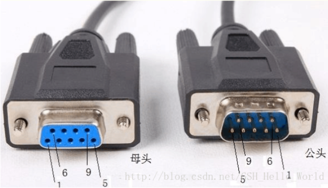

引言：

对于主机与外界的数据交换，也可以说是通信吧，通常主机的数据都来自于硬盘，cpu从内存取数据，内存从硬盘取数据，cpu和内存直接通过总线连接，而内存和硬盘的数据传输是通过SATA总线相互连接，遵循SATA相关传输协议，进而间接从硬盘获取数据。而硬盘的数据来自与哪里呢，来自于外界，外界数据如何传送到内存再到硬盘，这里就涉及到了主机与外界的数据传输，我这里特指内存与外界的数据交换。最常见的输入设备可能就是键盘输入了，现今的键盘一般都是用过usb接口连接到SIO总线上，他们之间主要通过USB总线来进行数据交换，很遗憾这篇文章它不是主角。在早期，连接外部设备和终端设备似乎串口更受欢迎，到今天，即使串口数据传输速度等诸多方面都被usb碾压， 但是COM虽然速度慢，使用繁杂，但它的抗干扰能力是远远超过USB的，在同等高频干扰情况下，使用USB通讯的设备经常会死机卡住，但COM口就不会。现在很多工业上还是会用COM口，就是这个原因。
串口（COM)：
串行接口 (Serial Interface) 是指数据一位一位地顺序传送，其特点是通信线路简单，只要一对传输线就可以实现双向通信（可以直接利用电话线作为传输线），从而大大降低了成本，特别适用于远距离通信，但传送速度较慢。一条信息的各位数据被逐位按顺序传送的通讯方式称为串行通讯。串行通讯的特点是：数据位的传送，按位顺序进行，最少只需一根传输线即可完成；成本低但传送速度慢。串行通讯的距离可以从几米到几千米；根据信息的传送方向，串行通讯可以进一步分为单工、半双工和全双工三种。
这里着重分析RS-232标注的串口。
RS-232
也称标准串口，最常用的一种串行通讯接口。它是在1970年由美国电子工业协会（EIA）联合贝尔系统、调制解调器厂家及计算机终端生产厂家共同制定的用于串行通讯的标准。它的全名是“数据终端设备（DTE）和数据通讯设备（DCE）之间串行二进制数据交换接口技术标准”。传统的RS-232-C接口标准有22根线，采用标准25芯D型插头座（DB25），后来使用简化为9芯D型插座（DB9），现在应用中25芯插头座已很少采用。
RS-232采取不平衡传输方式，即所谓单端通讯。由于其发送电平与接收电平的差仅为2V至3V左右，所以其共模抑制能力差，再加上双绞线上的分布电容，其传送距离最大为约15米，最高速率为20kb/s。RS-232是为点对点（即只用一对收、发设备）通讯而设计的，其驱动器负载为3～7kΩ。所以RS-232适合本地设备之间的通信。
9针串口（DB9)

针脚 | 名称 | 全名 | 方向（主机 外设） |
3 | TxD | Transmit Data | -> |
2 | RxD | Recevie Data | <- |
7 | RTS | Request To Send | -> |
8 | CTS | Clear To Send | <- |
6 | DSR | Data Set Ready | <- |
4 | DTR | Data Terminal Ready | -> |
1 | DCD | Data Carrier Detect | <- |
9 | RI | Ring Indicatot | <- |
5 | GND | Sigal Ground | - |
信号定义：
RS-232标准定义了18个不同的串行通信的信号。而这些之中，仅仅有如下6个可以在UNIX环境中使用。
GND - Logic Ground
从技术角度讲，GND不能算是信号。但是没有它其他信号都不能用了。基本上，logic ground有点像一个参考电压，通过它来判断哪个电压表示正哪个电压表示负。
TXD - Transmitted Data
TXD信号负载着从你的电脑或者设备到另一端(比如调制解调器)的数据。Mark范围的电压被解析成1，而space范围电压被解析成0。
RXD - Received Data
RXD于TXD正好相反。它负载着从另一端的电脑或者设备上传到你的工作站的数据。Mark和space的解析方法于TXD一致。
DCD - Data Carrier Detect
DCD信号通常来自串口连结线的另一端。这条信号线上的space电压表示另一端的电脑或者设备现在已经连接。但是，DCD信号线却不是总可以得到的，有些设备上有这条信号线，而有的则没有。
DTR - Data Terminal Ready
DTR信号是你的工作站产生的，用以告诉另一端的电脑或者设备你已经是否已经准备好了。Space电压表示准备好了，而mark电压表示没有准备好。当你在工作站上打开串行接口时，DTR通常自动被设置位有效。
CTS - Clear To Send
CTS则通常来自连结线的另一端。Space电压表示你可以从工作站送出更多的数据。CTS通常用来协调你的工作站和另一端之间的串行数据流。
RTS - Request To Send
如果RTS信号被设置成space电压，这表示你准备好了一些数据需要传送。和CTS一样，RTS也被用来协调工作站和另一端的电脑或者设备之间的数据流。有些工作站上会一直将这个信号设置位space。
串行通信的异步通信和同步通信：
同步通信方式， 是把许多字符组成一个信息组，这样，字符可以一个接一个地传输，但是，在每组信息(通常称为信息帧)的开始要加上同步字符，在没有信息要传输时，要填上空字符，因为同步传输不允许有间隙。同步方式下，发送方除了发送数据，还要传输同步时钟信号，信息传输的双方用同一个时钟信号确定传输过程中每1位的位置。
如下图：

异步通信：按标准的异步通信数据格式（叫做异步通信帧格式），1个字符在传输时，除了传输实际数据字符信息外，还要传输几个外加数位。具体说，在1个字符开始传输前，输出线必须在逻辑上处于“1”状态，这称为标识态。传输一开始，输出线由标识态变为“0”状态，从而作为起始位。起始位后面为5～8个信息位，信息位由低往高排列，即先传字符的低位，后传字符的高位。信息位后面为校验位，校验位可以按奇校验设置，也可以按偶校验设置，或不设校验位。最后是逻辑的“1”作为停止位，停止位可为1位、1.5位或者2位。如果传输完1个字符以后，立即传输下一个字符，那么，后一个字符的起始位便紧挨着前一个字符的停止位了，否则，输出线又会进入标识态。在异步通信方式中，发送和接收的双方必须约定相同的帧格式，否则会造成传输错误。在异步通信方式中，发送方只发送数据帧，不传输时钟，发送和接收双方必须约定相同的传输率。当然双方实际工作速率不可能绝对相等，但是只要误差不超过一定的限度，就不会造成传输出错。

比较起来，在传输率相同时，同步通信方式下的信息有效率要比异步方式下的高，因为同步方式下的非数据信息比例比较小。
同步通信一般用于通信网中，有大批量数据需要传输时。
而异步通信常应用于在工业、实际应用中。适用于短距离、速率不高的情况下。
现今的大量数据传输，通常会使用网线或者usb，而不会用到传输速度较慢的串口。
但是在开发环境中，串口却是非常常见的数据传输接口，对于短距离传输且数据量不大的情况，串口更具有优势。
在Linux和windows下，串口的名称分别如下：
操作系统 | 串口1 | 串口2 | USB/RS-232转换器 |
Windows | COM1 | COM2 | - |
Linux | /dev/ttyS0 | /dev/ttyS1 | /dev/ttyUSB0 |
reference：